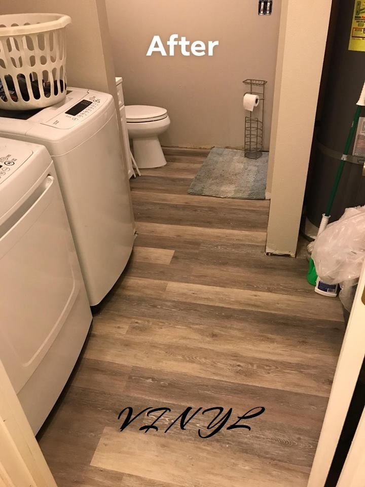
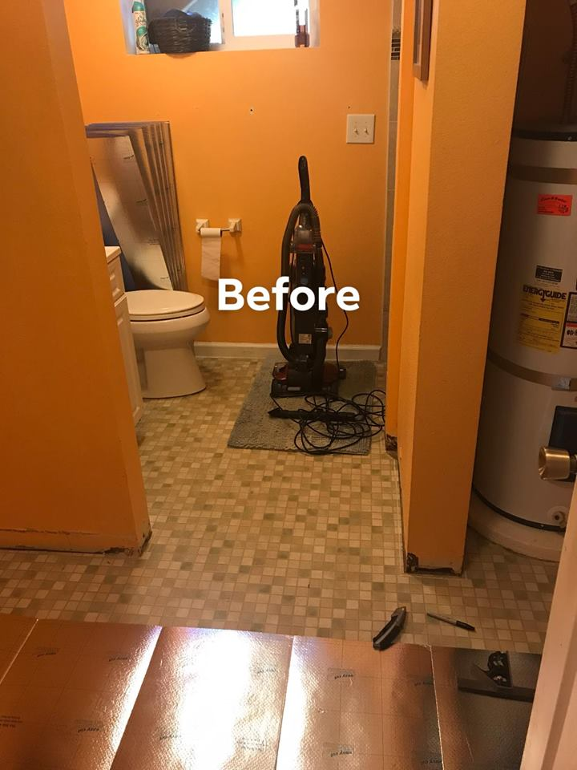

Flooring Projects
  Flooring tends to scare a lot of people due to all the measuring involved. Let us take care of that for you and make sure the only finger you lift is the one to choose which flooring you have your sights set on. Our team will take care of the rest. Flooring has never been easier! Choose a design and get going!To get you started, here is some information on flooring that you might need to know.
- Vinyl Plank: - Although synthetic by origin, vinyl flooring achieves the rich, deep, and elegant look of wooden floors. This floor type also comes in different colors and patterns since vinyl manufacturing processes have been upgraded throughout the decades. Vinyl floors are durable and will ably resist impacts and scratches against their surfaces. Vinyl floors are cost effective and are the easiest ones to invest on at the outset.
- Wood: - Wood flooring is the classic option and it comes in oak, maple, and bamboo. With proper care and maintenance, wood floors can last a long time. Cleaning wooden floors only require sweeping and the application of polishing shine solution while scrubbing from time to time. Perfect for the authentic rustic atmosphere.
- Laminate: - Laminate flooring presents itself as an option for those who want to capture the grandeur of wood or stone without breaking the bank. Laminate is hardy and will show no signs of fading or stains for a decade. It is not easily affected by moisture like wood and it will require less care than authentic wood or stone flooring. Clean-up with a mop or broom.